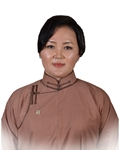

Member of the State Great Khural of Mongolia
Munkhtsetseg Gompildoo
Member of the State Great Khural of Mongolia MUNKHTSETSEG Gompildoo
Mongolian People's Party
Education, graduated schools, education degree:
1991 Secondary school #1, Dornogobi aimag
1995 BA in Journalism, State Pedagogical University
2013 MA in Linguistics, National University of Mongolia
Working experience:
1995 - 1998 Journalist, “Government news” newspaper
1999 - 2000 Head of division, “Century news” newspaper
2000 - 2004 Press officer, “New Mind” LLC
2004 - 2009 Executive Director, “New Mind” LLC
2009 - 2016 CEO of the Mongolian Writers' Union
2016 Member of the State Great Hural (Parliament) of Mongolia
Awards:
2009 Order of “Polar Star”
Foreign language knowledge:
English